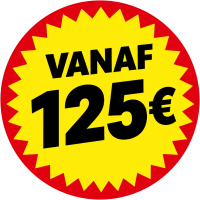

Auto die niet start
Startproblemen, elektrische problemen en mechanische defecten zijn de meest voorkomende oproepen in Boom.
Ik help in Boom vanuit de Antwerpse regio, met een vlotte verbinding via de A12. Bij normale verkeersomstandigheden ben ik gemiddeld ongeveer 15 tot 20 minuten onderweg.
Geen verborgen kosten.
Boom is één van de gemeenten waar ik via de A12 snel aanwezig kan zijn. Naast Boom Markt ben ik ook actief rond het industrieterrein tussen Boom en Willebroek en de omgeving van Tomorrowland / De Schorre.
Boom heeft voldoende ruimte en meestal minder verkeersdrukte dan Antwerpen-stad. Dat maakt het makkelijker om er vlot te werken.
Startproblemen, elektrische problemen en mechanische defecten zijn de meest voorkomende oproepen in Boom.
Ik takel vooral personenwagens en bestelwagens, en af en toe een motorfiets.
Veel klanten laten hun voertuig vervoeren naar Antwerpen of Puurs, en soms naar een specialist in Brussel.
Mijn 7-tonner kan ook smallere straten en de meeste locaties in Boom bereiken.
Klanten in Boom hebben vaak iets minder haast dan klanten in het centrum van Antwerpen en kunnen soms wachten op een ingepland transport.
Ik spreek de prijs af voordat ik vertrek. Geen verborgen kosten. Waar nodig geef ik ook advies over waar u het voertuig het best naartoe brengt.
Vanuit Antwerpen ben ik ook actief in onder meer deze gemeenten.
Praktische antwoorden voor wanneer u pech hebt of een voertuig moet laten vervoeren.
Bel direct. Vertel waar u staat, welk voertuig u hebt en wat er gebeurd is.
